Chapter 29: The Extremists and the Swadeshi Movement (1905-11)
Source of the earlier revolutionary wave of 1907-13 that this chapter contrasts.
| Year | Paper | Topic | Answer |
|---|---|---|---|
| 1997 | Prelims | (Prelims 1997) | (B) A-3 B-4 C-2 D-1 |
| 2001 | Prelims | (Prelims 2001) | (B) Surya Sen |
Armed struggle returned after Chauri Chaura, but now with socialism, secularism and a pen.
Read it like a film first. Then go to the notes: every fact below is expanded there.
Story spine: NCM was withdrawn in 1922 and released revolutionaries, disliking both council-entry and constructive work, went back to arms. This time the Russian Revolution of 1917 had given them socialism, so HRA 1924 became HSRA 1928 and a fight against class oppression joined the fight against the British. Kakori, the Lahore Conspiracy, the bomb in the CLA and Chittagong followed, ending in hangings by 1934. The movement was crushed, but it left a secular, ideological, thinking revolutionary tradition.
| Character | Role in the story | Hook |
|---|---|---|
| Ram Prasad Bismil | HRA 1924 founder; Kakori leader; hanged; chanted the Gayatri Mantra | The Kakori man |
| Ashfaqullah Khan | HRA 1924 founder; hanged after Kakori | Bismil's partner |
| Jogesh Chatterjee | HRA 1924 founder; Bengal | Bengal founder |
| Chandrashekhar Azad | HRA founder; revived it as HSRA; shot himself at Alfred Park, 27 Feb 1931 | Azad = free to the end |
| Sachin Sanyal | HRA founder; Delhi Conspiracy Case 1912; wrote Bandi Jeevan; Bengal | The guide-book writer |
| Bhagat Singh | HSRA; Marxist; Lahore Conspiracy; CLA bomb; hanged 23 Mar 1931 | The thinker-revolutionary |
| Sukhdev | HSRA member; hanged 23 Mar 1931 | Martyr number two |
| Rajguru | HSRA member; hanged 23 Mar 1931 | Martyr number three |
| Bhagwati Charan Vohra | HSRA; co-wrote Philosophy of Bomb; died 28 May 1930 testing a bomb, River Ravi | Vohra = Ravi |
| B.K. Dutt | Threw the CLA bomb with Bhagat Singh | The bomb partner |
| Lala Lajpat Rai | Sher-e-Punjab; died after the anti-Simon lathi-charge; set up Lahore Student Union 1923 | The reason |
| James Scott / John Saunders | SP who led the assault / DSP killed by mistake | Scott aimed, Saunders fell |
| Surya Sen | School teacher; set up IRA; Chittagong raid; captured and hanged 1934 | The Chittagong master |
| Pritilata Waddedar | Age 21; took potassium cyanide to avoid capture | Cyanide martyr |
| Jatin Das | Fellow prisoner; died on 64th day of hunger strike | The 64th day |
| Gopinath Saha | Failed attempt on the Police Commissioner | Saha = failed shot |
| Key term | In plain words |
|---|---|
| HRA 1924 | Hindustan Republican Army / Association, founded 1924 |
| HSRA 1928 | HRA revived with 'Socialist' added |
| Kakori Robbery 1925 | Train cash looted to buy arms |
| Defence of India Act 1915 | Wartime law used to jail revolutionaries |
| Amnesty 1920 | Release of jailed revolutionaries |
| Pro-Changers / No-Changers | Swarajists (council entry) / Gandhians (constructive work) |
| Bandi Jeevan | Sachin Sanyal's guide to revolutionary activities |
| Philosophy of Bomb | HSRA ideology document by Vohra and Azad |
| CLA | Central Legislative Assembly |
| Public Safety Bill / Trade Disputes Bill | Bills to curb the working class movement and communists |
| Provisional Revolutionary Government | Declared by the Chittagong rebels |
| IRA | Indian Republican Army of Surya Sen |
| Why I Am an Atheist | Bhagat Singh's 1930 jail essay |
| Punjab Naujawan Bharat Sabha | Youth body set up by Bhagat Singh in 1926 |
| Lahore Student Union | Set up 1923 by Lala Lajpat Rai |
| Sher-e-Punjab | Title of Lala Lajpat Rai |
Remember it as Post-1922 revolutionaries: HRA 1924 to Kakori 1925, HSRA 1928 to Lahore and CLA, Surya Sen's Chittagong 1930-33, all secular, socialist and thinking.
| Year and paper | What was asked | Answer and the teacher's mark | Where |
|---|---|---|---|
| Prelims 1997 | Match list: Chittagong Armoury raid, Kakori Conspiracy, Lahore Conspiracy, Ghadar Party with leaders | (b) A-3 B-4 C-2 D-1. Board: Hardayal = Ghadar 1913-15; Jatin Das = Lahore C Case; A (Surya Sen) and B (Bismil) marked. Answer slides agree with the key. | Sections 3, 5, 8, 11 |
| Prelims 2001 | Who organised the Chittagong armoury raid? | (b) Surya Sen. Answer slide: chief of the Chittagong group; raid on 18 April 1930. | Section 8 |
| Mains (theme) | Since the 1920s the national movement acquired various ideological strands and widened its social base. Discuss. | Skeleton: socialism and class rights (HSRA, Philosophy of Bomb), secularism, revolutionaries as thinkers, workers and peasants. | Sections 1, 9, 10 |
| Mains (theme) | Importance of new objectives added to the vision of independence since the twenties | Skeleton: independence defined as social, economic and political; freedom from exploitation; nationalisation; communalism as big an enemy as colonialism. | Section 10 |
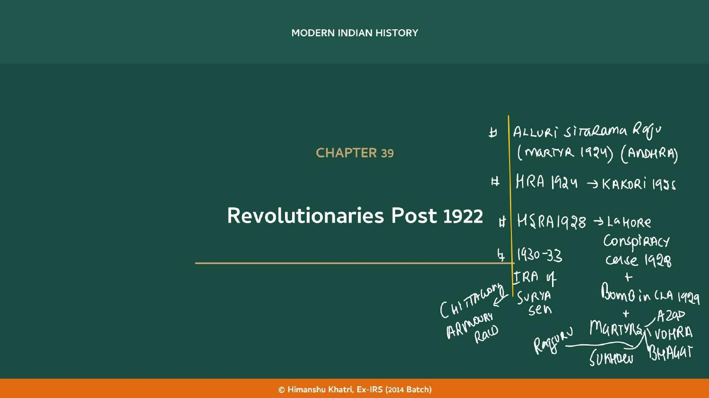
| Element | Detail |
|---|---|
| Russian Revolution 1917 (RR1917) | A wave of communist thought across the world reached India's revolutionaries. |
| Twin oppression | They wanted to end colonial oppression and class oppression (peasants by landed classes, workers by capitalists). |
| Method | Armed struggle; they concluded non-violence had failed. |
| Goal | Socialism, given mass poverty under colonial rule; the framework was still evolving. |
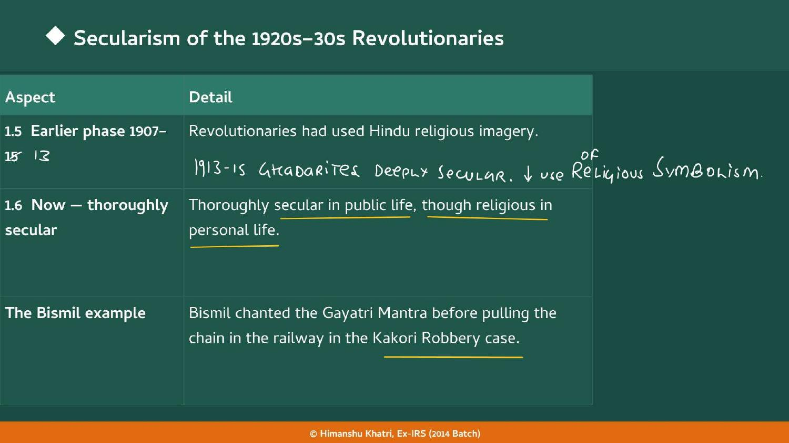
| Aspect | Detail |
|---|---|
| Earlier phase 1907-13 | Revolutionaries used Hindu religious imagery. |
| Now: thoroughly secular | Secular in public, though religious in personal life. |
| The Bismil example | Bismil chanted the Gayatri Mantra before pulling the chain in the railway in the Kakori Robbery case. |
| Religion's residual role | Still a source of courage: personal faith, not public politics. |
| Shared with Ghadrites | Secularism was also a trait of the Ghadrites 1913-15. |
| Reinforced by ideology | Communist ideology is inherently pro-secularism. |
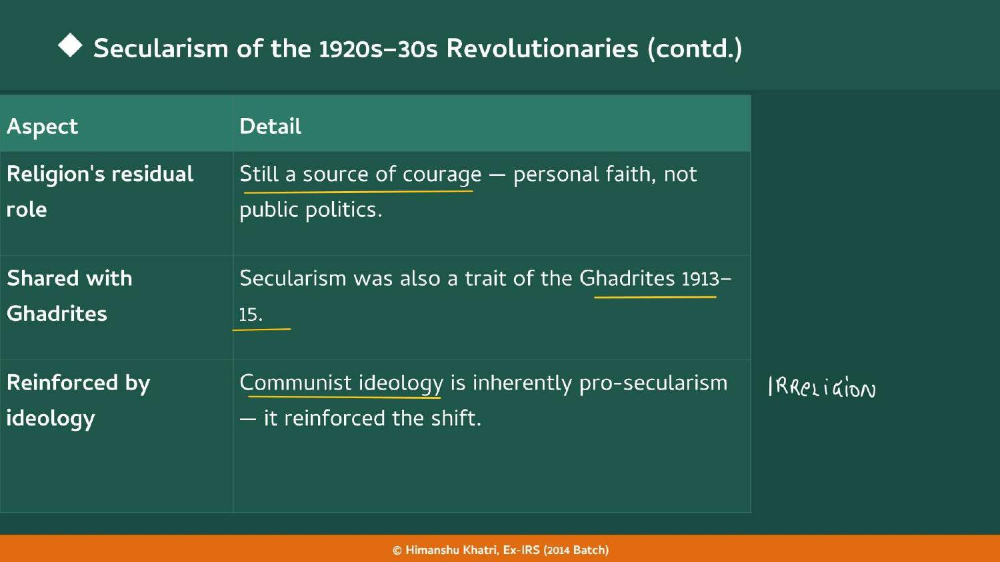
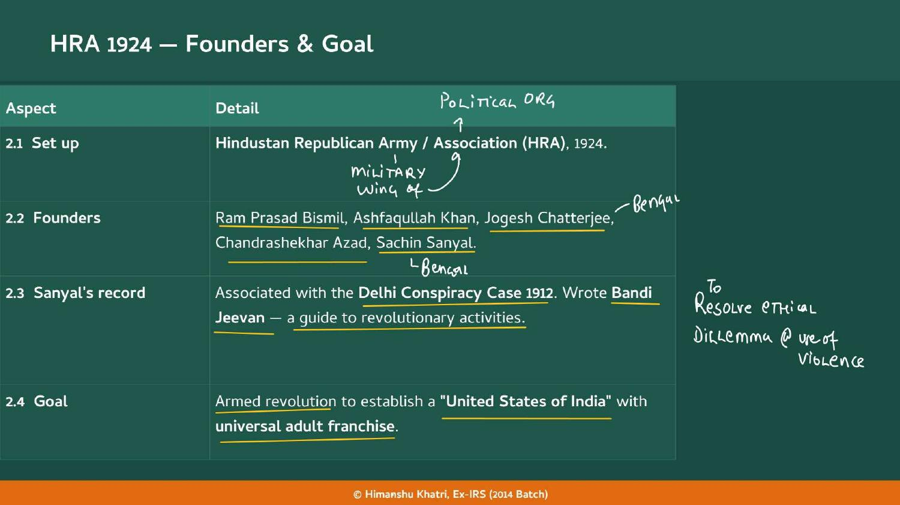
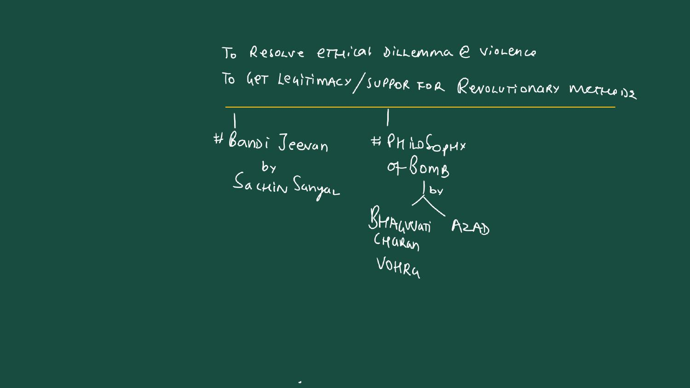
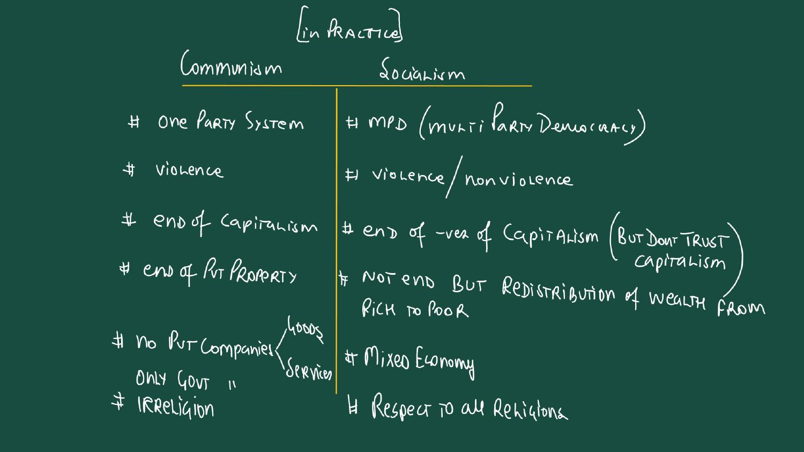
| In practice | Communism | Socialism |
|---|---|---|
| Party system | One-party system | Multi-party democracy (MPD) |
| Violence | Violence | Violence or non-violence |
| Capitalism | End of capitalism | End of the negatives of capitalism (but do not trust capitalism) |
| Property and wealth | End of private property | Not an end but redistribution of wealth from rich to poor |
| Firms | No private companies, only government (goods and services) | Mixed economy |
| Religion | Irreligion | Respect to all religions |
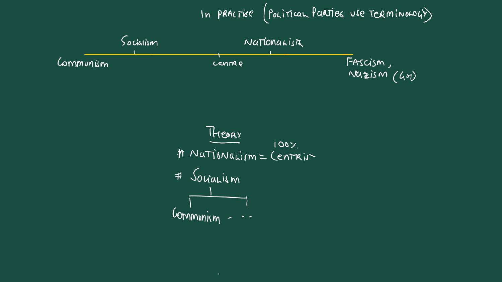
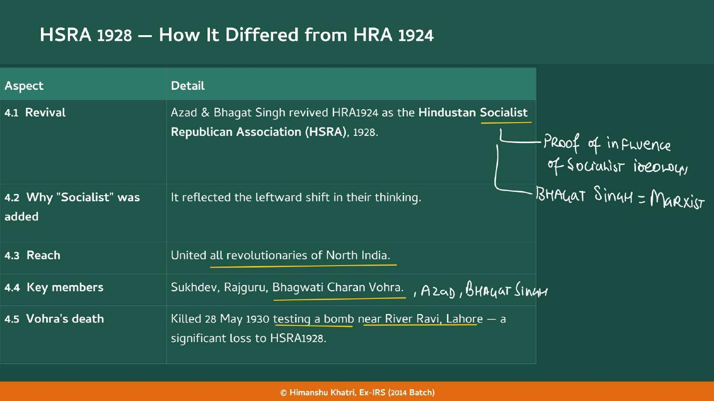
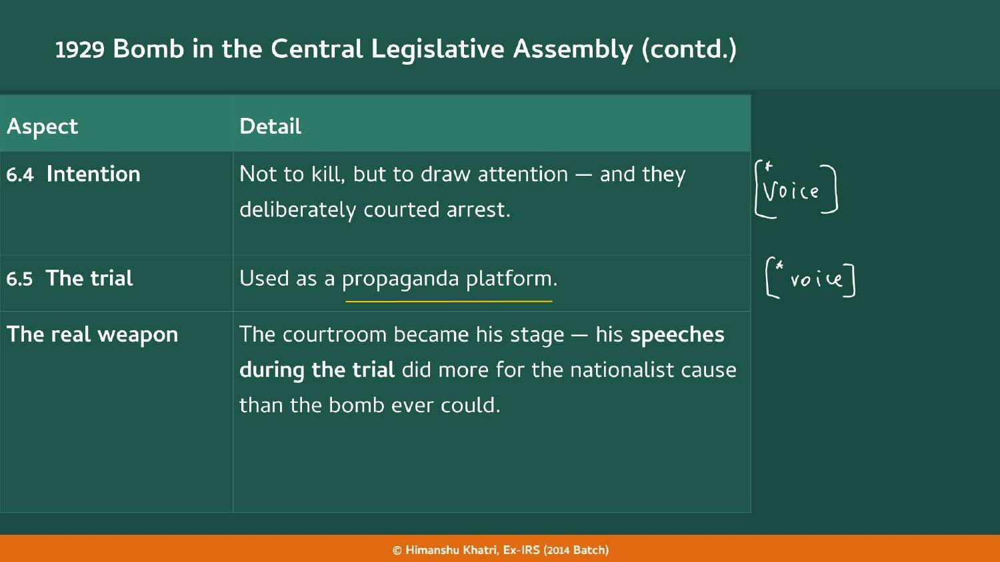
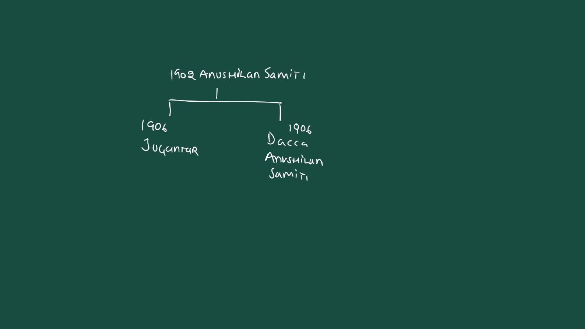
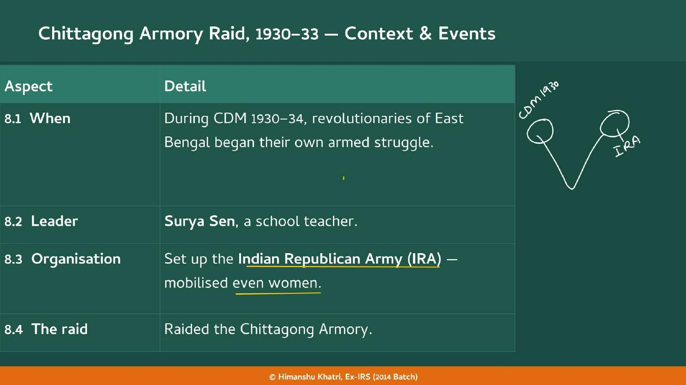
| Name | What she did |
|---|---|
| Pritilata Waddedar (21) | Consumed potassium cyanide to avoid capture; a martyr. |
| Kalpana Dutt | Life imprisonment. |
| Shanti Ghosh (15) and Suniti Chaudhary (14) | School girls; shot dead C.G.B. Stevens, District Magistrate of Comilla, 14 December 1931. |
| Bina Das (21) | Fired five shots at Governor Stanley Jackson at a Calcutta University convocation, Feb 1932; he survived. |
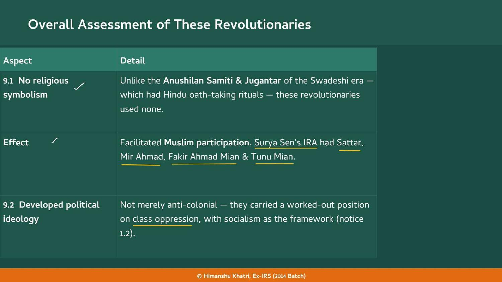
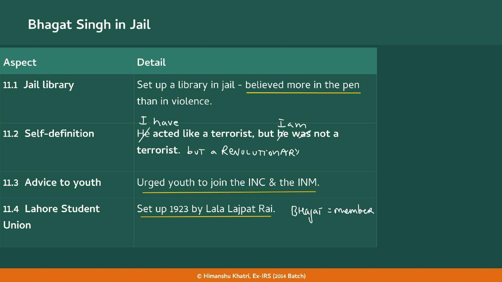
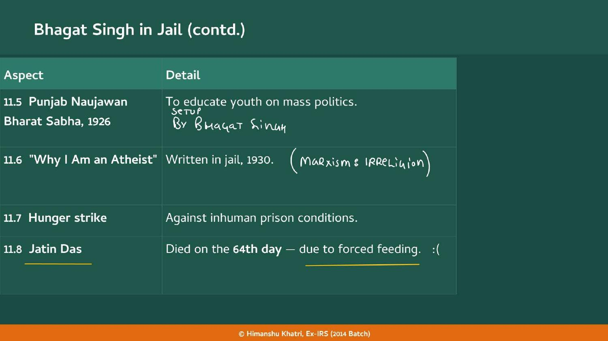
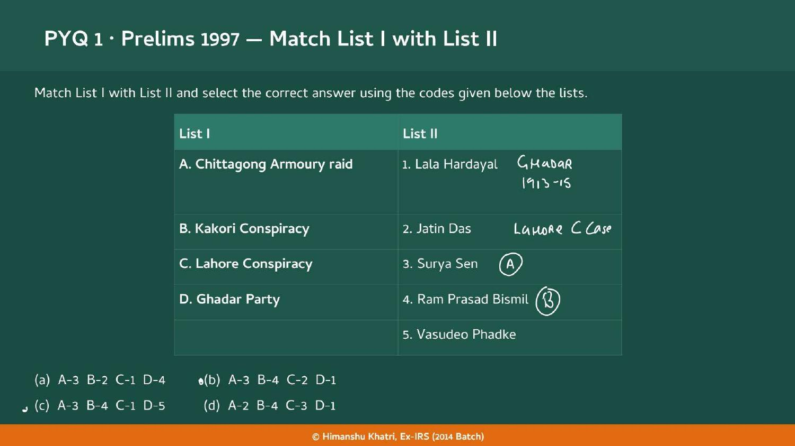
| Year | What happened |
|---|---|
| 1902 | Anushilan Samiti (board) |
| 1906 | Splits into Jugantar and Dacca Anushilan Samiti (board) |
| 1912 | Delhi Conspiracy Case (Sanyal associated) |
| 1913-15 | Ghadarites, deeply secular (board) ★ |
| 1915 | Defence of India Act used against revolutionaries |
| 1917 | Russian Revolution brings communist thought ★ |
| 1920 | Amnesty releases revolutionaries |
| Feb 1922 | NCM withdrawn after Chauri Chaura ★ |
| 1923 | Lahore Student Union set up by Lala Lajpat Rai |
| 1924 | HRA founded; Alluri Sitarama Raju martyr (board) ★ |
| 1925 | Kakori Robbery; Bismil and Ashfaqullah hanged; C.R. Das dies ★ |
| 1926 | Punjab Naujawan Bharat Sabha |
| Nov 1928 | Lajpat Rai assaulted in anti-Simon protests; later dies ★ |
| 1928 | HSRA formed; Saunders killed (Lahore Conspiracy 1928-31) ★ |
| 1929 | Bomb in CLA by Bhagat Singh and B.K. Dutt ★ |
| 18 Apr 1930 | Chittagong Armory Raid (answer slide) ★ |
| 28 May 1930 | Vohra killed near River Ravi ★ |
| 1930 | 'Why I Am an Atheist' written in jail |
| 27 Feb 1931 | Azad dies at Alfred Park, Allahabad ★ |
| 23 Mar 1931 | Bhagat Singh, Sukhdev, Rajguru hanged ★ |
| 14 Dec 1931 | Shanti Ghosh and Suniti Chaudhary shoot Stevens |
| Feb 1932 | Bina Das fires at Governor Stanley Jackson |
| 1933 | Chittagong crushed; Nehru jailed for sedition |
| 1934 | Surya Sen captured and hanged ★ |
Source of the earlier revolutionary wave of 1907-13 that this chapter contrasts.
Anushilan Samiti and Jugantar of the first phase.
Ghadrites were already deeply secular; Hardayal in Prelims 1997.
NCM and its withdrawal after Chauri Chaura drove the revival.
Class oppression of peasants links to the revolutionaries' socialism.
Anti-Simon protests led to Lajpat Rai's death and the Lahore case.
Chittagong ran alongside CDM 1930-34.
Working-class movement the bills aimed at; women in the struggle.
Read the question, answer in your head, then tap to check.
| Which Act did the British use against revolutionaries in World War I? | The Defence of India Act 1915. |
| What happened in 1920 for the revolutionaries? | An amnesty released them from prison. |
| Why were the revolutionaries disappointed in 1922? | NCM was abruptly withdrawn after Chauri Chaura. |
| Why did they not join the Swarajists or No-Changers? | No interest in parliamentary politics nor in Constructive Work. |
| Which 1917 event brought communist thought? | The Russian Revolution. |
| Which two oppressions did they want to end? | Colonial oppression and class oppression. |
| What did the teacher correct the earlier phase to? | 1907-13 (handout says 1907-15). |
| Who chanted the Gayatri Mantra before pulling the chain at Kakori? | Ram Prasad Bismil. |
| Who founded HRA 1924? | Bismil, Ashfaqullah Khan, Jogesh Chatterjee, Chandrashekhar Azad, Sachin Sanyal. |
| What did Sachin Sanyal write? | Bandi Jeevan, a guide to revolutionary activities. |
| What was HRA's goal? | Armed revolution for a United States of India with universal adult franchise. |
| What happened after Kakori 1925? | Bismil and Ashfaqullah hanged, Azad not caught, HRA went inactive. |
| Who revived HRA as HSRA 1928? | Azad and Bhagat Singh. |
| What does 'Socialist' in HSRA prove? | The influence of socialist ideology; Bhagat Singh was a Marxist. |
| How did Vohra die? | Killed on 28 May 1930 testing a bomb near the River Ravi, Lahore. |
| Who was the intended target in the Lahore case? | James Scott, SP; John Saunders, DSP, was killed by mistake. |
| When were Bhagat Singh, Sukhdev and Rajguru hanged? | 23 March 1931. |
| How did Azad die? | He shot himself at Alfred Park, Allahabad, on 27 Feb 1931. |
| Which bills were before the CLA in 1929? | The Public Safety Bill and the Trade Disputes Bill. |
| Why was the CLA bomb thrown? | To 'make the deaf hear'; harmless, not to kill, courted arrest. |
| Who backed S.C. Bose and J.M. Sen Gupta in Bengal? | Bose: Yugantar. Sen Gupta: Anushilan Samiti. |
| Who set up the IRA and led the Chittagong raid? | Surya Sen, a school teacher. |
| Who took cyanide at Chittagong? | Pritilata Waddedar, age 21. |
| Who shot Stevens, District Magistrate of Comilla? | Shanti Ghosh (15) and Suniti Chaudhary (14), 14 Dec 1931. |
| Why was Nehru jailed in 1933, and for how long? | Two years on sedition charges, for condemning imperialism and praising the revolutionaries. |
| Name the four Muslim cadre in Surya Sen's IRA. | Sattar, Mir Ahmad, Fakir Ahmad Mian, Tunu Mian. |
| What three differences did the post-1922 revolutionaries have? | No religious symbolism, developed ideology, politically aware thinkers. |
| Who wrote Philosophy of Bomb? | Bhagwati Charan Vohra and Azad. |
| How did Philosophy of Bomb define revolution? | Independence: Social, Economic and Political. |
| What did Bhagat Singh say about communalism? | It is as big an enemy as colonialism. |
| Which essay did Bhagat Singh write in jail in 1930? | 'Why I Am an Atheist'. |
| Who died on the 64th day of a hunger strike? | Jatin Das, due to forced feeding. |
Tap the card to flip.